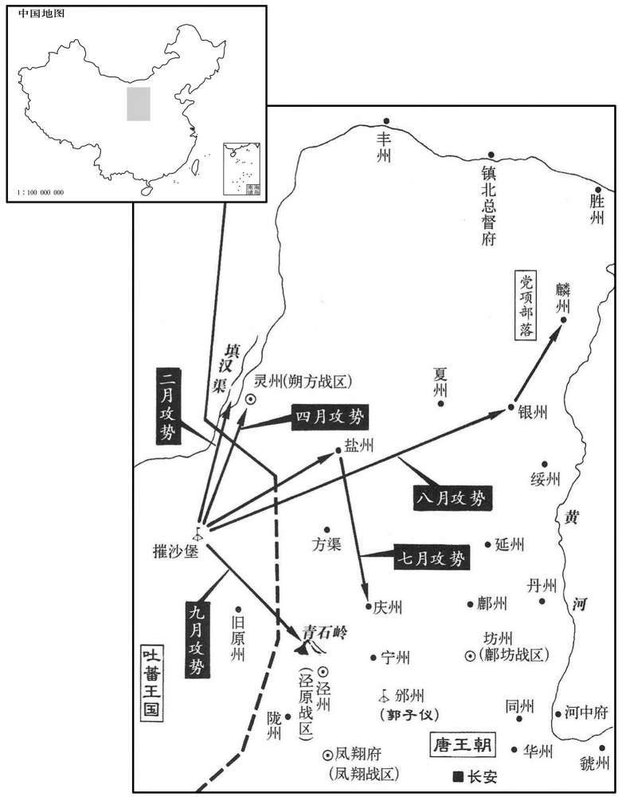
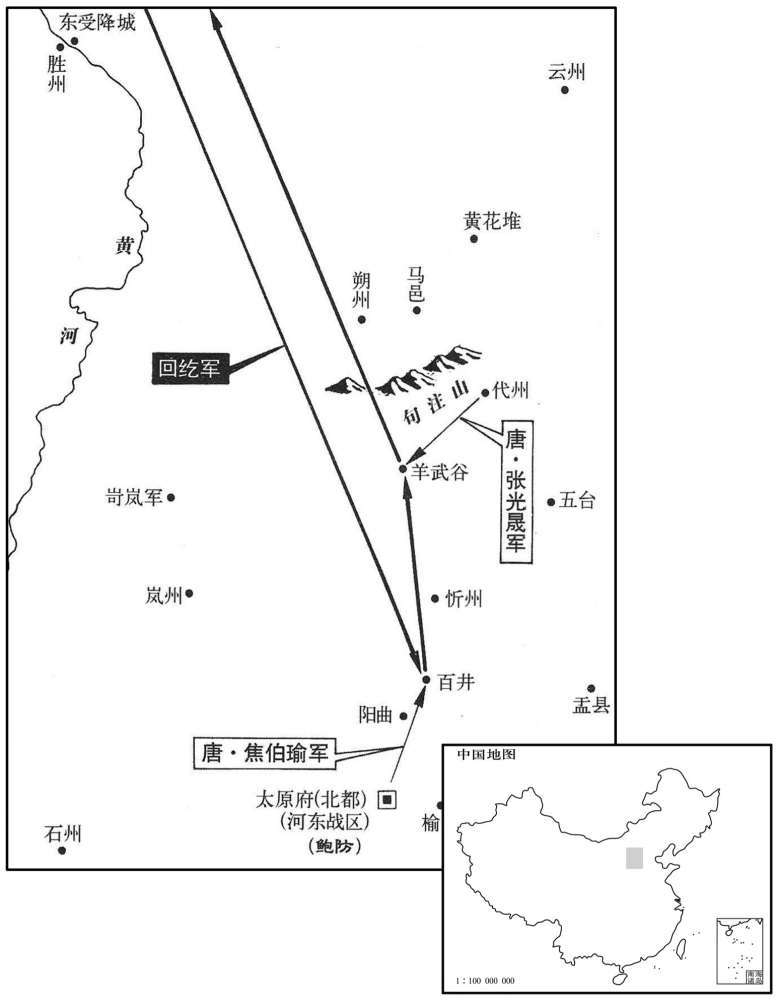

公元778年资治通鉴：本年记事、原文与白话对照
按原书编年位置阅读；追叙和史论不等于本年发生的事件。白话采用所据译本，缺译不以生成译文补齐。
卷225 · 本年记事
公元778年 · 唐代宗睿文孝武皇帝大历十三年
十三年〔（戊午、七七八）〕
本年事件索引（现代整理）
- 代宗命毁白渠水磨灌田，升平公主率先拆除
- 回纥进犯太原，焦伯瑜出战惨败，张光晟击退回纥
- 吐蕃攻灵州并夺取灌溉渠道
- 回纥使者途经河中，朔方军士劫掠其辎重
- 常谦光击败进犯灵州的吐蕃军
- 朱泚进献猫鼠同乳，崔佑甫指出此为反常之妖
- 郭子仪奏请派浑瑊镇守振武，回纥撤离边境
- 李怀光击退进犯盐州、庆州的吐蕃军
- 李宝臣请求恢复张姓，代宗准许
- 李怀光击退吐蕃并夺回被掠党项牲畜
- 代宗将贞懿皇后葬入庄陵
- 郭子仪、朱泚、段秀实奉命击退逼近泾州的吐蕃
- 代宗任刘晏为左仆射，仍掌转运盐铁事务
- 郭子仪入朝，杜黄裳揭发李怀光伪造诏书
- 代宗任杜亚为江西观察使
- 代宗召李泌回京商议元载案并宽免路嗣恭
- 郭子仪误信吴曜谗言，杀死副使张昙后悔
- 常衮建议先任用李泌为刺史考察政绩

本年形势与背景参考图
春，正月，辛酉，敕毁白渠支流碾硙以溉田。〔碾，尼展翻。硙，五对翻，磨也。公输班作硙，后人又激水为之，不烦人力，引水激轮，使自旋转，谓之水磨。史照曰：碾，磨也。硙，也。〕升平公主有二硙，入见于上，请存之。〔见，贤遍翻。〕上曰：「吾欲以利苍生，汝识吾意，当为众先。」公主即日毁之。
春季，正月辛酉（十四日），代宗敕令毁掉白渠支流上的水磨，用以灌溉田地。升平公主有二部水磨，她入宫面见皇上，请求保留。代宗对她说：“我想为百姓谋利，而你懂得我的意图，应当为大家作表率。”公主当天就毁掉水磨。
戊辰，回纥寇太原，河东押牙泗水李自良曰：〔纥，下没翻。唐节度使置都押牙，牙前重职也，即今制置使司帐前都提举之职。泗水县，属兖州，汉之卞县也。隋时分西界为汶阳县，于卞县古城置泗水县。〕「回纥精锐远来求鬬，难与争锋；不如筑二垒于归路，以兵戍之。虏至，坚壁勿与战，彼师老自归，乃出军乘之。二垒抗其前，大军蹙其后，无不捷矣。」留后鲍防不从，遣大将焦伯瑜等逆战；癸酉，遇虏于阳曲，〔将，即亮翻。宋白曰：阳曲，汉旧县；后汉末，移理木井城，今县是也。〕大败而还，死者万余人。回纥纵兵大掠。二月，代州都督张光晟击破之于羊武谷，〔还，从宣翻，又音如字。纥，下没翻。晟，成正翻。九域志：代州崞县有阳武寨。〕乃引去。上亦不问回纥入寇之故，待之如初。
戊辰（二十一日），回纥进犯太原，河东押牙泗水人李自良说：“回纥精锐部队远道前来求战，难以与他们交锋，不如在他们的归途中修筑二个堡垒，用兵戍守。敌军到来，则坚守壁垒不与他们交战，他们的军队就会士气低落，自行撤退，这时便可乘机出兵。二个堡垒抵抗敌军前锋，大部队进迫他们的后部，没有不胜的。”留后鲍防不听，派遣大将焦伯瑜等人迎战。癸酉（二十六日），在阳曲县与敌军遭遇，结果大败而归，死了一万多人。回纥放纵士兵，大肆掠夺。二月，代州都督张光晟在羊武谷击败敌军，敌军这才退去。代宗也不追究回纥入侵的缘故，仍如以前厚待他们。

己亥，吐蕃遣其将马重英帅众四万寇灵州，〔吐，从暾入声。帅，读曰率。〕夺填汉、御史、尚书三渠水口以弊屯田。〔史照曰：三渠，谓填汉渠、御史渠、尚书渠也。填，读曰镇。〕
己亥（二十二日），吐蕃派遣将领马重英率领四万大军进犯灵州，夺取了填汉、御史和尚书三渠的出水口，以此破坏唐朝的屯田。
三月，甲戍，回纥使还，过河中，朔方军士掠其辎重，〔朔方军士之留屯河中者。使，疏吏翻。过，古禾翻，又古卧翻。辎，庄持翻。重，直用翻。〕因大掠坊市。
三月甲戌（二十八日），回纥使者回国，路过河中，朔方士兵掠夺了他的辎重，于是回纥人大肆掠夺街坊市井。
夏，四月，甲辰，吐蕃寇灵州，朔方留后常谦光击破之。
夏季，四月甲辰（二十八日），吐蕃进犯灵州，朔方留后常谦光将他们击败。
六月，戊戍，陇右节度使朱泚献猫鼠同乳不相害者以为瑞；〔泚，且礼翻，又音此。乳，如住翻。〕常衮帅百官称贺。〔帅，读曰率。〕中书舍人崔佑甫独不贺，曰：「物反常为妖。猫捕鼠，乃其职也，今同乳，妖也。〔妖，于骄翻。〕何乃贺为！宜戒法吏之不察奸、边吏之不御寇者，以承天意。」上嘉之。佑甫，沔之子也。〔崔沔，开元名臣。沔，弥兖翻。〕秋，七月，〔【章：十二行本「月」下有「壬子」二字；乙十一行本同。】〕以佑甫知吏部选事。佑甫数以公事与常衮争，由是恶之。〔为衮奏贬佑甫张本。选，须绢翻。数，所角翻。恶，乌路翻。〕
六月戊戌（二十三日），陇右节度使朱向皇上进献同乳而不相伤害的猫鼠，以此为祥瑞；常率领大臣们祝贺。唯独中书舍人崔甫不肯祝贺，他说：“事物反常，这是妖异。猫捕老鼠是猫的职责，如今同乳，则是妖怪，为什么还要祝贺呢？应当告诫那些不察奸情的执法官和不抵御敌寇的边防官，以
顺应上天的意志。”代宗嘉奖他。崔甫是崔沔的儿子。秋季，七月，代宗让崔
甫执掌吏部选官事宜。崔甫多次因为公事与常发生争执，因此，常很讨
厌他。
戊午，郭子仪奏以回纥犹在塞上，边人恐惧，请遣邠州刺史浑瑊将兵镇振武军，〔邠，卑旻翻。瑊，古咸翻。将，即亮翻，又音如字。振武军，在单于都护府城内，秦、汉之云中郡城也。宋白曰：振武军，即汉定襄郡之盛乐县也，在阴山之阳，黄河之北。〕从之。回纥始去。
戊午（十四日），郭子仪奏称，因为回纥人仍在塞上，边地百姓恐惧，请求派遣州刺史浑率军镇守镇武军，代宗同意。回纥这才离去。
辛未，吐蕃将马重英二万众寇盐、庆二州，〔重，直龙翻。〕郭子仪遣朔〔【章：十二行本「朔」上有「河东」二字；乙十一行本同。】〕方都虞候李怀光击却之。
辛未（二十七日），吐蕃将领马重英率二万大军进犯盐州、庆州，郭子仪派遣朔方都虞候李怀光击退了他们。
八月，乙亥，成德节度使李宝臣请复姓张，许之。〔宝臣赐姓见二百二十二卷宝应元年。使，疏吏翻。〕
八月乙亥（初二），成德节度使李宝臣请求让他恢复张姓，代宗准许。
吐蕃二万众寇银、麟州，略党项杂畜，〔吐，从暾入声。银州，汉西河郡圁阴县地。麟州，汉、新秦中之地。党，底朗翻。畜，许救翻。〕郭子仪遣李怀光击破之。
吐蕃二万大军进犯银州、麟州，掠夺党项人的各种牲畜，郭子仪派遣李怀光将他们击败。
上悼念贞懿皇后不已，〔贞懿皇后，独孤妃也，十年薨。〕殡于内殿，累年不忍葬；丁酉，始葬于庄陵。〔庄陵，在京兆三原县西北五里。〕
代宗对贞懿皇后悼念不已，将灵柩停放在内殿，多年不忍心埋葬；丁酉（二十四日），才埋葬在庄陵。
九月，庚午，吐蕃万骑下青石岭，逼泾州；〔青石岭在泾州保定县西。宋白曰：临泾城，直泾州西北九十里，其界有青石岭。骑，奇寄翻。〕诏郭子仪、朱泚与段秀实共却之。
九月庚午（二十七日），吐蕃一万骑兵从青石岭下来，进逼泾州。代宗下诏命令郭子仪、朱和段秀实共同使吐蕃后退。
冬，十二月，丙戍，以吏部尚书、转运、盐铁等使刘晏为左仆射，知三铨及使职如故。〔尚，辰羊翻。射，寅谢翻。欧阳修曰：凡选有文武：文选，吏部主之；武选，兵部主之：皆为三铨，尚书、侍郎分主之，尚书掌其一，侍郎分其二。〕
冬季，十二月丙戌（十四日），代宗让吏部尚书、转运及盐铁等使刘晏担任左仆射，但掌管三铨和使职不变。
郭子仪入朝，命判官京兆杜黄裳主留务。李怀光阴谋代子仪，矫为诏书，欲诛大将温儒雅等。黄裳察其诈，以诘怀光；〔朝，直遥翻。将，即亮翻。诘，去吉翻。〕怀光流汗服罪。于是诸将之难制者，黄裳矫子仪之命，皆出之于外，军府乃安。
郭子仪入朝，任命判官京兆人杜黄裳主持留府事务。李怀光图谋取代郭子仪，诈称有皇上诏书，想杀掉大将温儒雅等。杜黄裳察觉有诈，因此责问李怀光。李怀光掠慌得汗流浃背，表示服罪。于是杜黄裳假托郭子仪的命令，将难于控制的将领派到外地去，节度使军府才得安定。
以给事中杜亚为江西观察使。
代宗任命给事中杜亚为江西观察使。
上召江西判官李泌入见，〔泌，毗必翻。李泌出佐江西，见上卷五年。见，贤遍翻。〕语以元载事，曰：「与卿别八年，乃能诛此贼。赖太子发其阴谋，〔此归功于太子耳。语，牛倨翻。〕不然，几不见卿。」对曰：「臣昔日固尝言之。陛下知群臣有不善，则去之；〔几，居依翻。去，羌吕翻。〕含容太过，故至于此。」上曰：「事亦应十全，不可轻发。」上因言：「朕面属卿于路嗣恭，〔属，之欲翻。〕而嗣恭取载意，奏卿为虔州别驾。嗣恭初平岭南，献琉璃盘，径九寸，朕以为至宝。及破载家，得嗣恭所遗载琉璃盘，径尺。〔遗，于季翻。程大昌曰：汉西域传：罽宾国有琥珀、流离。师古注曰：魏略云：大秦国出赤、白、黑、黄、青、绿、缥、绀、红、紫十种流离。此盖自然之物，采泽光润，踰于众玉。今俗所用，皆消冶石汁，加以众药，灌而为之，虚脆不耐，实非真物。按流离，今书附玉旁为琉璃字，师古之记是矣，亦未得其详也。穆天子传：天子东征，有釆石之山，凡好石之器于是出。升山取釆石，铸以成器。注云：釆石，文釆之石也。则铸石为器，古有之矣。颜氏谓为自然之物恐不详也。北史大月氏传：魏太武时，月氏人商贩京师，自云能铸石为五色琉璃。于是釆矿于山中，即京师铸之，既成，光泽乃美于西方来者。自是琉璃遂贱。用此言推之，则虽西域琉璃，亦用石铸，无自然生成者。兼外国奇产，中国未始无之，独不闻有所谓真琉璃也。然中国所铸，有与西域异者。铸之中国，色甚光鲜，而质则轻脆，沃以热酒，随手破裂。其来自海舶者，制差钝朴，而色亦微暗。其可异者，虽百沸汤注之，与磁银无异，了不复动，是名蕃琉璃也。蕃琉璃之异于中国，其别盖如此，而未尝闻以石琢之也。余谓路嗣恭所献者，盖师古所谓大秦琉璃自然之物。否则代宗何以谓之至宝哉！程大昌考之不详耳。〕俟其至，当与卿议之。」泌曰：「嗣恭为人，小心，善事人，畏权势，精勤吏事而不知大体。昔为县令，有能名；〔路嗣恭始名剑客，为萧关令，连徙神乌、姑臧二县，考绩为天下最。玄宗以为可嗣汉鲁恭，因赐名。〕陛下未暇知之，而为载所用，故为之尽力。陛下诚知而用之，彼亦为陛下尽力矣。〔为之，亦为，于伪翻。〕虔州别驾，臣自欲之，非其罪也。且嗣恭新立大功，〔即谓平岭南之功。〕陛下岂得以一琉璃盘罪之邪！」上意乃解，以嗣恭为兵部尚书。〔邪，意耶。尚，辰羊翻。〕
代宗召江西判官李泌入朝相见，与他谈起元载的事情，说道：“与你分别八年，才能够杀掉此贼。幸亏太子发觉他的阴谋，不然的话几乎见不到你了。”李泌回答说：“我过去曾经说过，陛下如果知道有居心不良的大臣，那就将他们除掉；陛下包容太过，所以到这种地步。”代宗说：“考虑事情也应该周全，不可轻举妄动。”代宗就势又说：“朕当面将你嘱托给路嗣恭，然而路嗣恭却顺着元载的意思，上奏让你担任虔州别驾。路嗣恭初次平定岭南，献琉璃盘，直径九寸，朕以为是最珍贵的宝物。等到抄元载的家，查获了路嗣恭送给元载的琉璃盘，直径却有一尺。等他到京后，应当跟你议一议怎么处理他这件事。”李泌回答说：“路嗣恭为人小心谨慎。善于侍奉人，害怕有权有势的人，做官精明勤恳但不识大体。过去担任县令，有能干的名声，陛下没顾上了解他，而被元载所用，所以路嗣恭为他尽力。陛下如果真正了解并且重用他，他也会为陛下尽力的。虔州别驾是我自己想当的，不是他的罪过。况且路嗣恭新近立下大功，陛下岂能因为一件琉璃盘而向他问罪吗？”代宗心中原有的疙瘩解开了，任命路嗣恭为兵部尚书。
郭子仪以朔方节度副使张昙性刚率，谓其以武人轻己，衔之；〔昙，徒含翻。衔，户缄翻。〕孔目官吴曜为子仪所任，〔诸镇州皆有孔目官，以综理众事，吏职也。言一孔一目，皆所综理也。〕因而构之。子仪怒，诬奏昙扇动军众，诛之。掌书记高郢力争之，子仪不听，奏贬郢猗氏丞。〔猗氏县，属河中府。宋白曰：本郇国地，猗顿于此起富，故曰猗氏。〕既而僚佐多以病求去，子仪悔之，悉荐之于朝，曰：「吴曜误我。」遂逐之。〔史言郭子仪过而能改。朝，直遥翻。〕
郭子仪因为朔方节度副使张昙性格刚强直率，曾说郭子仪身为武将轻视自己，心中怀恨。孔目官吴曜被郭子仪所信任，因而挑拔离间。郭子仪十分恼怒，诬奏张昙煽动军队造反，将他杀掉。掌书记高郢据理力争，郭子仪不听，奏请将高郢贬为猗氏县丞。不久僚属们纷纷托病请求离职，郭子仪十分后悔，将他们全部推荐给朝廷，说道：“吴曜误了我。”于是将吴曜赶走。
常衮言于上曰：「陛下久欲用李泌，〔泌，毗必翻。〕昔汉宣帝欲用人为公卿，必先试理人，请且以为刺史，使周知人间利病，俟报政而用之。」〔太公治齐，五月而报政。伯禽治鲁，三年而报政。常衮用此语也。〕
常对代宗说：“陛下早就想重用李泌，过去汉宣帝想用人担任公卿大臣，必定先试他治理百姓的才能，请陛下暂且让他担任刺史，让他广泛了解人间的利病，等到上报政绩之后再重用他。”